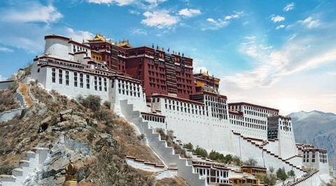
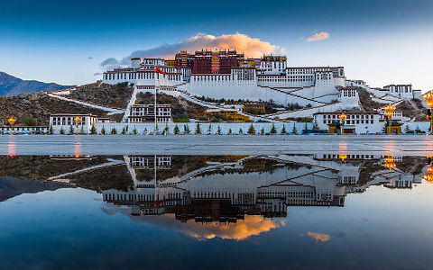
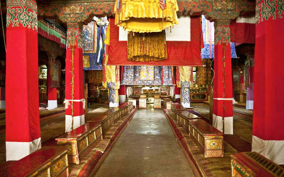
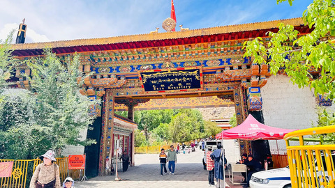
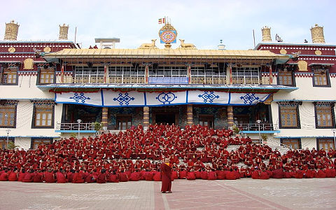
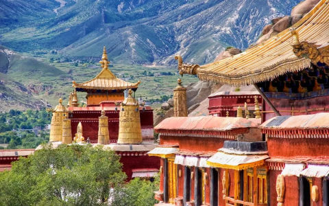
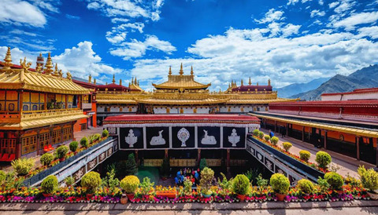
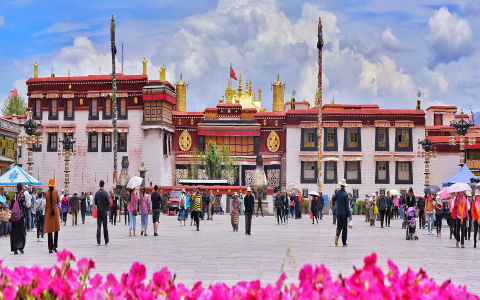
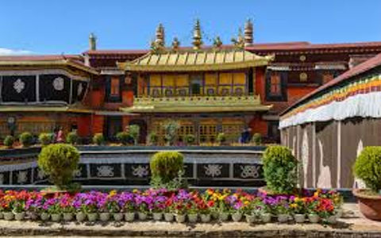

Visite religieuse au Tibet
Le Tibet est souvent appelé le « Toit du monde » et revêt une immense signification spirituelle. C'est un sanctuaire pour les pèlerins bouddhistes et les chercheurs spirituels du monde entier. La riche culture, les monastères sereins et les temples sacrés en font une destination unique pour ceux qui recherchent l'illumination et la paix.
-
Potala Palace
Palais du Potala, immense complexe religieux et administratif à Lhassa, région autonome du Tibet du sud. Il est situé au sommet de Mar-po-ri (Montagne Rouge à 130 mètres au-dessus de la vallée de la rivière Lhassa, et s'élève de façon spectaculaire depuis sa base rocheuse. Potrang Karpo (achevé en 1648 ; Palais Blanc) servait autrefois de siège du gouvernement tibétain et de résidence principale du Dalaï Lama ; à partir du milieu du XVIIIe siècle, il servait de palais d'hiver. Potrang Marpo (1694 ; Palais Rouge) abrite plusieurs chapelles, des statues sacrées et les tombeaux de huit dalaï-lamas ; il reste un lieu de pèlerinage majeur pour les bouddhistes tibétains.
   -
Sera Monastery
Vénéré non seulement comme l'un des six principaux monastères Gelugpa du bouddhisme tibétain, le monastère de Sera a assumé une autre responsabilité consistant à former d'éminents moines en servant d'établissement d'enseignement religieux. Il a été construit à l'origine par Jamchen Chojey Sakya Yeshe de Zel Gungtang (1355-1435), disciple de Djé Tsongkhapa en 1419. En entendant le chant perpétuel des écritures bouddhistes par les lamas résonner dans la salle Tsochin et en voyant l'activité routinière des débats bouddhistes dans la grande cour de débat, un sentiment palpable de sainteté inonde tout le corps. Des milliers de peintures murales sur les murs du bâtiment donnent aux visiteurs venant adorer le monastère et se sentent comme s'ils étaient au paradis du bouddhisme, acceptant le baptême des doctrines et des pouvoirs bouddhistes. La bibliothèque et l’imprimerie du monastère de Sera vous guident pour acquérir une compréhension globale du passé et du présent du monastère.
   -
Jokhang Temple
Le temple de Jokhang est l'un des sites religieux les plus importants du Tibet puisqu'il abrite la statue de l'époque où vivait le Bouddha Shakyamuni. Le bâtiment principal du temple a quatre étages. Tous les bâtiments du centre de Lhassa ne peuvent pas dépasser quatre étages. Cela permet à tout le monde de voir le toit doré du Jokhang depuis les toits de tous les autres bâtiments de la vieille ville. Jokhang est reconnu comme patrimoine culturel mondial par l'UNESCO. La statue la plus importante du temple a plus de 2 500 ans et a été consacrée par le Bouddha lui-même.
  